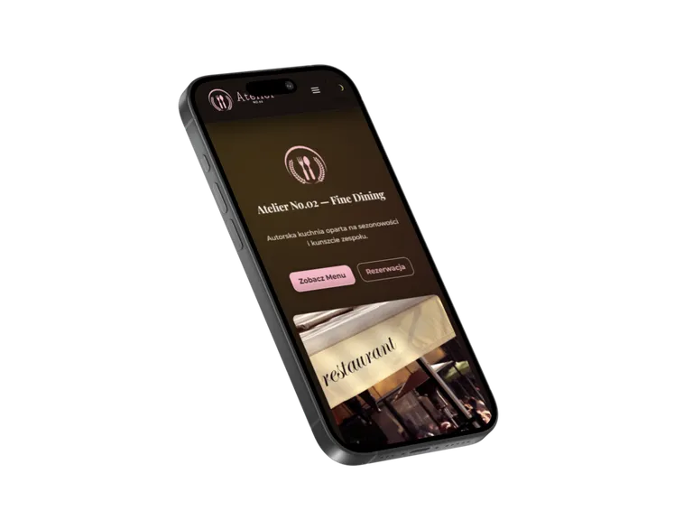
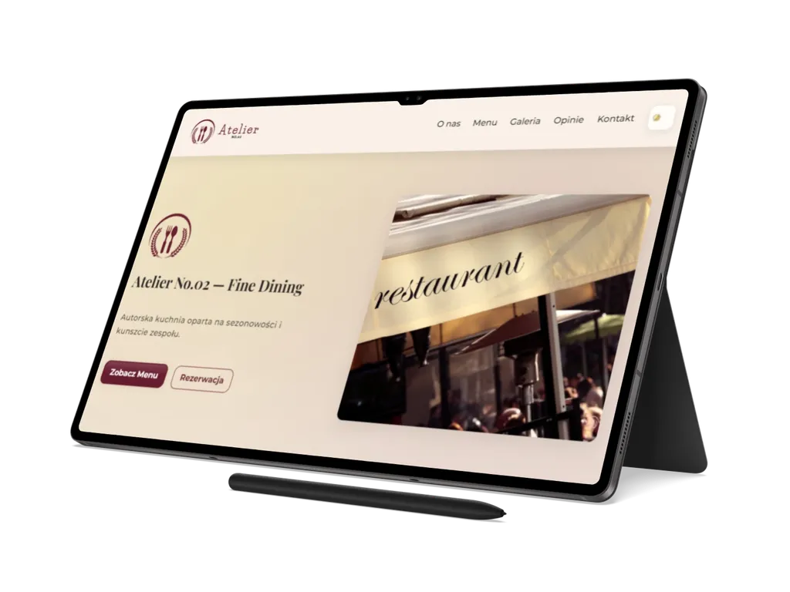
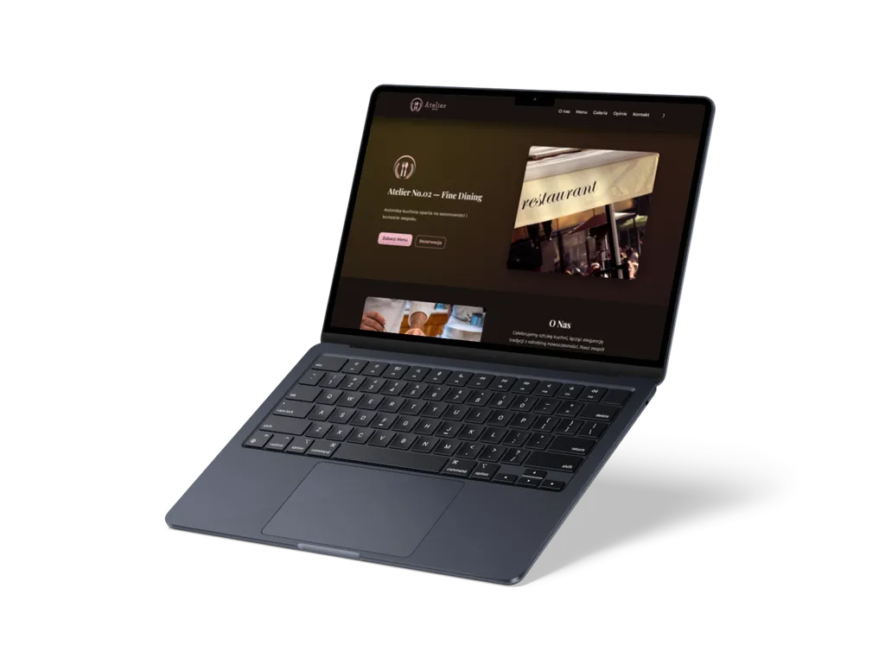

01
Atelier No.02
Wielostronicowy serwis restauracji premium, który łączy wyrafinowany kierunek wizualny z dynamicznym menu, galerią, formularzem kontaktowym, PWA i techniczną gotowością do publikacji.
Przegląd projektu
Atelier No.02 pokazuje premium podejście do statycznego serwisu restauracyjnego: od strony głównej, menu i galerii po formularz, offline, potwierdzenie wysyłki i PWA.
Projekt został przygotowany jako referencyjna realizacja portfolio, w której dopracowana estetyka idzie w parze z konkretną architekturą front-endu, dostępnością, SEO i procesem buildowym.
Zakres obejmuje stronę główną oraz dedykowane podstrony: o restauracji, menu, galerię, kontakt, strony prawne, widok offline, potwierdzenie formularza i stronę 404. Dzięki temu Atelier No.02 jest pełniejszym serwisem restauracyjnym, nie tylko pojedynczym landingiem.
Warstwa interakcji obejmuje dynamiczne renderowanie menu z
data/menu.json, filtrowanie i wyszukiwanie dań, lightbox galerii,
przełącznik motywu, mobilny drawer z kontrolą fokusa, formularz kontaktowy oraz
komunikaty online/offline.
StronyBiznesGastronomiaPremium
Zakres i akcenty
Case study łączy premium język wizualny z praktycznym zakresem serwisu restauracyjnego: menu, galerią, formularzem, stanami offline i standardem builda.
02
Menu, lightbox i formularz
03
SEO, PWA i jakość builda
Technologie i standard
Atelier No.02 zostało zbudowane w lekkim, statycznym stacku HTML, CSS i JavaScript, z narzędziami wspierającymi jakość kodu, obrazy, dostępność i publikację statyczną.
Warstwa runtime opiera się na HTML5, modułowym CSS podzielonym na
base, layout, components i
pages oraz JavaScript ES Modules. Build korzysta z PostCSS, cssnano,
esbuild, Sharp i fast-glob.
- funkcje domenowe są rozdzielone w modułach menu, galerii, nawigacji i formularza,
- kontrole jakości obejmują ESLint, html-validate, linkinator i pa11y-ci,
-
artefakt publikacyjny powstaje przez
build-dist.js, z konfiguracją_headersi_redirects.



Dalszy krok
Zobacz wielostronicowy serwis Atelier No.02 albo wróć do pełnego portfolio.
Atelier No.02 pokazuje zakres pracy nad premium front-endem restauracyjnym: od menu renderowanego z danych i galerii po SEO, dostępność, PWA, obrazy oraz przygotowanie projektu do publikacji.